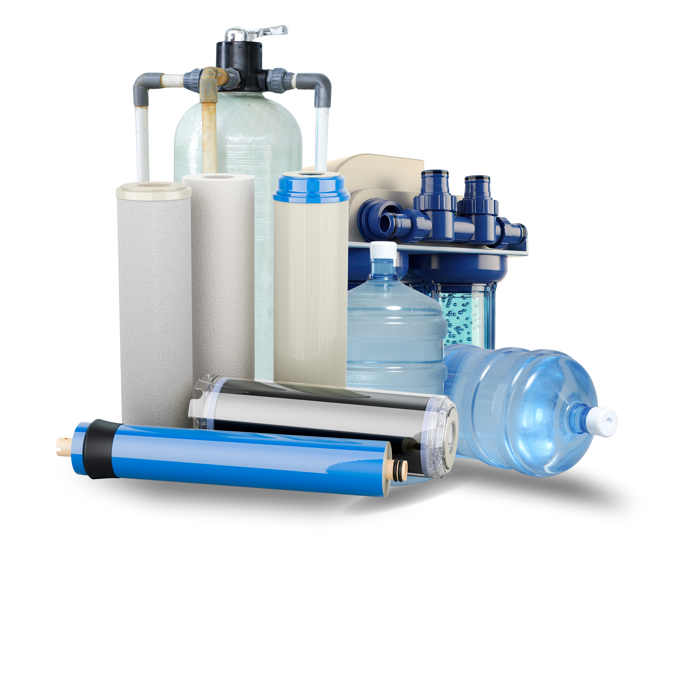
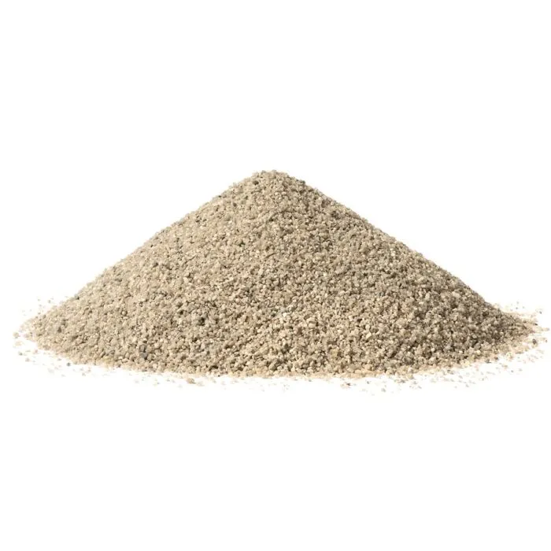
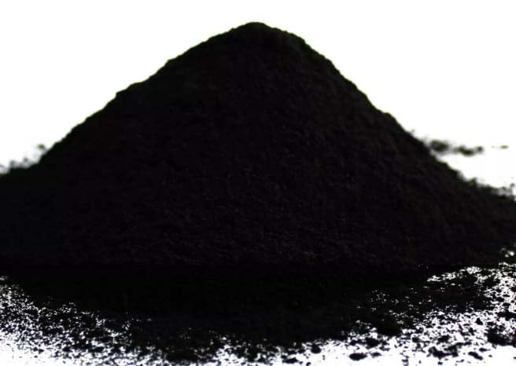
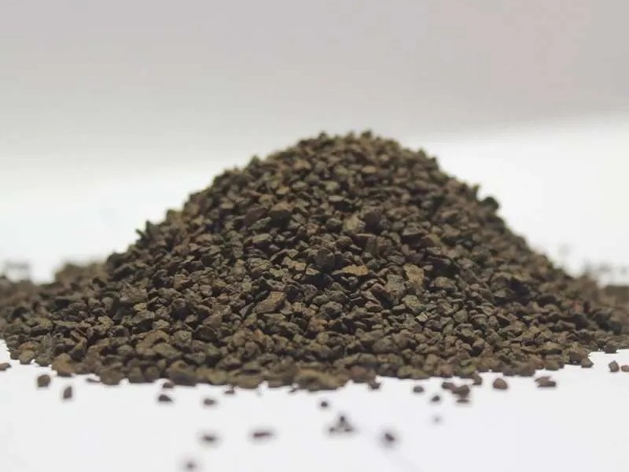

Pusat Filter Air & Tabung Media Terlengkap di Lampung.
Solusi air bersih untuk rumah tangga dan industri. Kami melayani jasa instalasi depot air minum, penggantian media (Carbon, Pasir Silika, Manganese), dan penjualan komponen filter air terbaik se-Provinsi Lampung.

Atau pilih masalah air Anda:
Kenali Kebutuhan Media Filter Air Anda
Setiap masalah air membutuhkan penanganan material (isi tabung) yang berbeda. Temukan solusinya di sini.

Pasir Silika
Fungsi: Penyaring tahap awal yang sangat efektif menahan endapan lumpur, tanah, partikel pasir, dan lumut kotor.
Solusi: Air Keruh & Kotor
Karbon Aktif (Carbon)
Fungsi: Menyerap bahan kimia, kaporit, serta memulihkan kejernihan air dari bau tak sedap dan rasa yang aneh.
Solusi: Air Berbau & Berasa
Manganese (Mangan)
Fungsi: Formulasi khusus untuk mengoksidasi dan mengikat kandungan zat besi tinggi dan logam berat pada air sumur/tanah.
Solusi: Air Kuning, Karat & BerminyakMengapa Memilih Al-Kautsar Filter Air?
Mitra terpercaya untuk solusi air bersih rumah tangga dan industri di Lampung.
Pengalaman 15+ Tahun
Berpengalaman lebih dari 15 tahun dalam instalasi, perawatan, dan pengelolaan sistem air minum serta water treatment.
Kualitas Terjamin & Harga Bersaing
Kami hanya menggunakan material filter terbaik, tabung FRP berkualitas tinggi, dengan harga yang jujur dan bersaing.
Fokus pada Kepuasan
Layanan kami berorientasi penuh pada kepuasan Anda, memastikan masalah air di rumah atau usaha tuntas tak bersisa.
Portofolio Pemasangan Terbaru di daerah Lampung
Pemasangan Depot Air di Way Halim
Instalasi Filter Rumah Tangga di Bandar Lampung
Pemasangan Tabung Media di Pahoman
Pemasangan DAMIU di Pagelaran
Filter Air untuk SPPG
Treatment Air di Natar